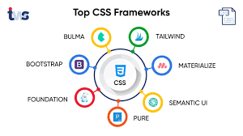

Framework CSS
Si estas pensando que quizás escribir todo el CSS desde cero para cada proyecto no sea lo más productivo para ti, es el momento de explorar el uso de un framework CSS.


Si estas pensando que quizás escribir todo el CSS desde cero para cada proyecto no sea lo más productivo para ti, es el momento de explorar el uso de un framework CSS.
En Recursos podras aprender con un video mas de Framework CSS.
